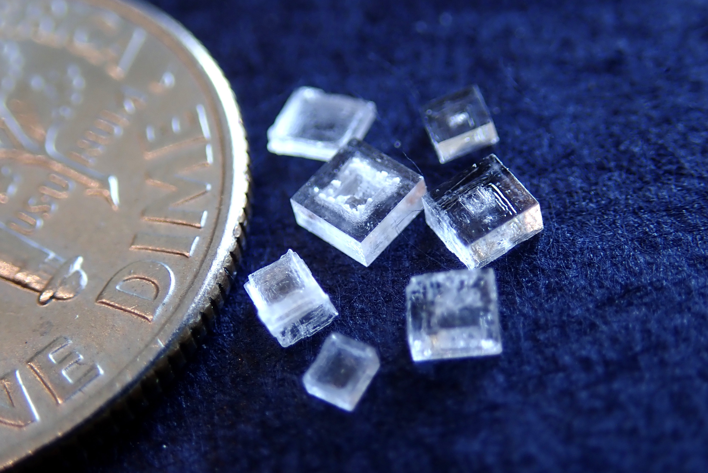

This is Masaya SAKAKIBARA's web page.

D3 student, Nakamura Lab., Department of Chemistry, The University of Tokyo
Direct observation of the atomistic mechanism of phase transition and chemical reaction
Power Metal/Liquor/Sci-Fi etc.